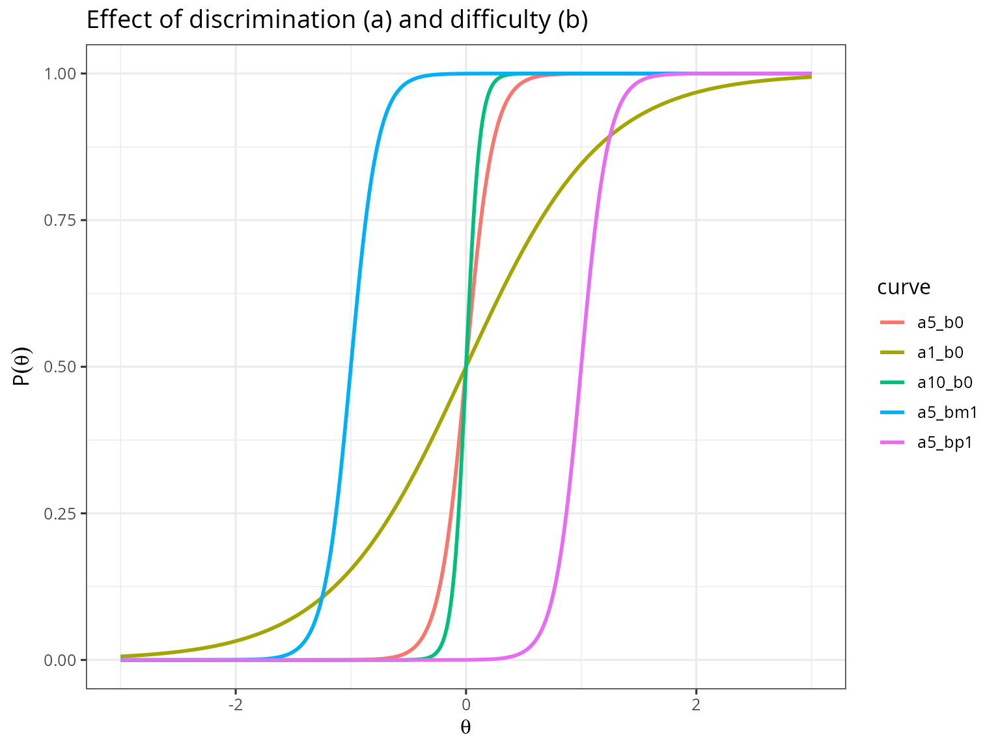
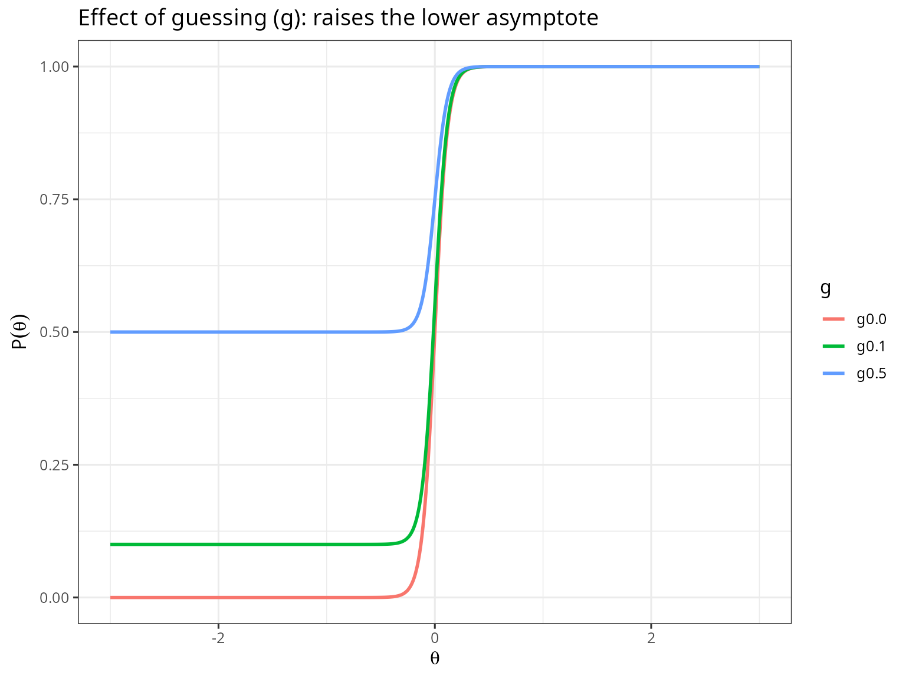
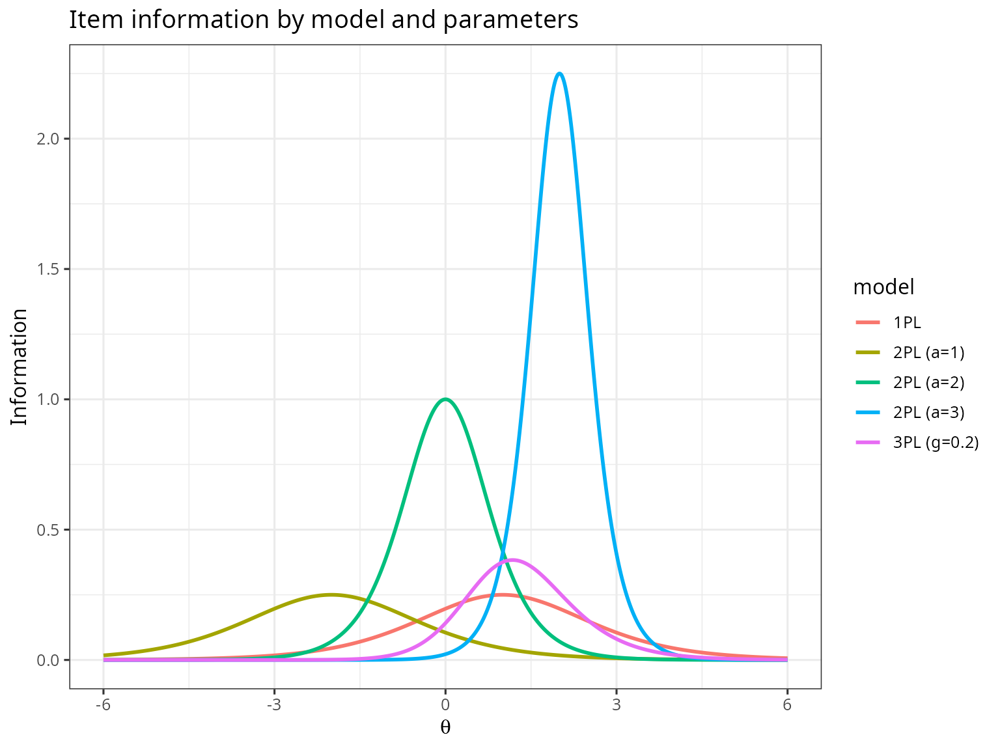
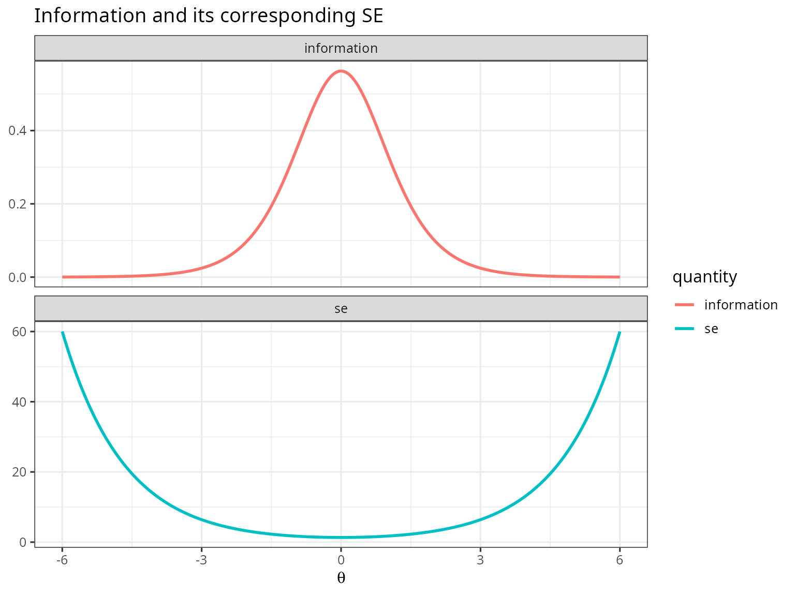

Description
This shows the output of a from-scratch, base-R implementation of
unidimensional IRT from the package rwf. The functions compute the item
response function with optional guessing and inattentiveness parameters
(compute_unidimensional_theta), item and test information
for the 1PL, 2PL and 3PL models (compute_info_1pl,
compute_info_2pl, compute_info_3pl), standard
errors (compute_se_theta), and Maximum Likelihood ability
estimates with a Newton-Raphson routine
(compute_unidimensional_ability).
Installation instructions for rwf can be found here
The code can be found here
Theoretical Background
The item response function
For a single item with discrimination a, difficulty b, and guessing g, the probability of a correct response at ability \theta is
P(\theta) = g + \frac{1-g}{1+e^{-Da(\theta-b)}}
where D is a scaling constant (1, or 1.702 to make the logistic curve closely approximate the normal ogive). Setting g=0 collapses this to the 2PL model; additionally fixing a across items gives the 1PL/Rasch model.
Newton-Raphson Maximum Likelihood ability estimation
Given a fixed set of item parameters and a response pattern u_1,\ldots,u_n, the ML ability estimate is found by iterating
\theta_{t+1} = \theta_t - \frac{L'(\theta_t)}{L''(\theta_t)}
where L' and L'' are the first and second derivatives of the log-likelihood, summed across items:
L'(\theta)=\sum_i \frac{Da_i(u_i-P_i)(P_i-g_i)}{P_i(1-g_i)} \qquad L''(\theta)=\sum_i \left(\frac{Da_i}{1-g_i}\right)^2\frac{(P_i-g_i)(1-P_i)(u_ig_i-P_i^2)}{P_i^2}
Iteration continues until the update is smaller than a tolerance (or
a maximum iteration count is hit), and the final estimate is clamped to
lim_theta to avoid runaway estimates for
all-correct/all-incorrect patterns (a known weakness of ML estimation,
discussed further in the EAP vignette,
which uses a Bayesian prior instead to avoid this failure mode
entirely).
Item and test information
Information quantifies precision at a given \theta; its formula depends on the model:
I_{1PL}(\theta)=P(1-P) \qquad I_{2PL}(\theta)=a^2P(1-P) \qquad I_{3PL}(\theta)=a^2\frac{1-P}{P}\left(\frac{P-g}{1-g}\right)^2
and the standard error of the ability estimate at that point is SE(\theta)=1/\sqrt{I(\theta)} — more information means a smaller (better) standard error.
The Item Response Function
x <- seq(-3, 3, by = 0.01)
df_curves <- data.frame(
theta = x,
a5_b0 = compute_unidimensional_theta(a = 5, b = 0, theta = x),
a1_b0 = compute_unidimensional_theta(a = 1, b = 0, theta = x),
a10_b0 = compute_unidimensional_theta(a = 10, b = 0, theta = x),
a5_bm1 = compute_unidimensional_theta(a = 5, b = -1, theta = x),
a5_bp1 = compute_unidimensional_theta(a = 5, b = 1, theta = x)
)
df_long <- reshape2::melt(df_curves, id.vars = "theta", variable.name = "curve", value.name = "P")
ggplot(df_long, aes(x = theta, y = P, color = curve)) +
geom_line(linewidth = 1) +
labs(title = "Effect of discrimination (a) and difficulty (b)", x = expression(theta), y = expression(P(theta))) +
theme_bw(base_size = 12)
Higher a produces a steeper curve (sharper
discrimination around b); b shifts the curve’s
midpoint left or right along the ability scale.
Checking the guessing parameter
df_guess <- data.frame(
theta = x,
g0.0 = compute_unidimensional_theta(a = 10, b = 0, g = 0, theta = x),
g0.1 = compute_unidimensional_theta(a = 10, b = 0, g = .1, theta = x),
g0.5 = compute_unidimensional_theta(a = 10, b = 0, g = .5, theta = x)
)
df_guess_long <- reshape2::melt(df_guess, id.vars = "theta", variable.name = "g", value.name = "P")
ggplot(df_guess_long, aes(x = theta, y = P, color = g)) +
geom_line(linewidth = 1) +
labs(title = "Effect of guessing (g): raises the lower asymptote", x = expression(theta), y = expression(P(theta))) +
theme_bw(base_size = 12)
Increasing g raises the curve’s lower asymptote — even
at very low ability, the probability of a correct response never drops
below g, exactly as intended for a 3PL guessing
parameter.
The inattentiveness parameter i has no effect
The function signature also accepts an inattentiveness parameter
i (documented as making the function compute a “4PL score”
when i != 1) — but checking the source shows the function
body never actually uses i in its formula. This is
verifiable directly:
data.frame(
theta = x[1:5],
i_1.0 = compute_unidimensional_theta(a = 10, b = 0, g = 0, i = 1, theta = x[1:5]),
i_0.9 = compute_unidimensional_theta(a = 10, b = 0, g = 0, i = .9, theta = x[1:5]),
i_0.6 = compute_unidimensional_theta(a = 10, b = 0, g = 0, i = .6, theta = x[1:5])
)## theta i_1.0 i_0.9 i_0.6
## 1 -3.00 6.682266e-23 6.014039e-23 4.009360e-23
## 2 -2.99 7.922106e-23 7.129896e-23 4.753264e-23
## 3 -2.98 9.391989e-23 8.452790e-23 5.635194e-23
## 4 -2.97 1.113460e-22 1.002114e-22 6.680758e-23
## 5 -2.96 1.320053e-22 1.188048e-22 7.920319e-23All three columns are identical regardless of i — so
despite the documentation, this function only ever computes a 3PL (or
2PL/1PL) curve, never a true 4PL curve with a lowered upper asymptote.
If a genuine 4PL upper asymptote is needed, the numerator
renum <- 1-g inside the function would need to become
renum <- i-g.
Newton-Raphson Ability Estimation
compute_unidimensional_ability is validated directly
against the three worked examples documented in its own roxygen block,
each of which records the exact expected output:
a <- c(0.39, 0.45, 0.52, 0.3, 0.35, 0.43, 0.42, 0.44, 0.34, 0.42)
b <- c(-1.96, -1.9, -1.38, -0.58, 0.48, -0.81, -0.35, 1.59, 1.33, 2.93)
u <- c(1, 1, 1, 1, 0, 0, 1, 0, 1, 0)
theta1 <- compute_unidimensional_ability(a = a, b = b, u = u, d = 1.7, g = NULL)
c(estimated = theta1, expected = 0.48402574251176, match = isTRUE(all.equal(theta1, 0.48402574251176, tolerance = 1e-6)))## estimated expected match
## 0.4840150 0.4840257 0.0000000
a <- c(1.27, 0.9, 0.94, 0.95, 0.55, 0.6, 0.44, 0.4)
b <- c(-0.54, 0.18, 0.21, 1.26, 1.73, -0.87, 1.72, 2.67)
u <- c(1, 1, 1, 1, 0, 0, 0, 0)
theta2 <- compute_unidimensional_ability(a = a, b = b, u = u, d = 1.7, g = NULL)
c(estimated = theta2, expected = 1.04621621510192, match = isTRUE(all.equal(theta2, 1.04621621510192, tolerance = 1e-6)))## estimated expected match
## 1.046215 1.046216 1.000000
a <- c(0.41, 0.32, 0.33, 1.2, 0.63, 0.62, 0.7, 0.61, 0.38, 0.53, 0.6, 1.16)
b <- c(-1.4, -1.3, -1.17, 0.2, 0.71, 0.86, -0.12, 0.12, 2.06, 1.38, 1.18, -0.33)
u <- c(1, 0, 1, 1, 0, 0, 0, 1, 1, 0, 1, 0)
theta3 <- compute_unidimensional_ability(a = a, b = b, u = u, d = 1.7, g = NULL)
c(estimated = theta3, expected = 0.0860506282671103, match = isTRUE(all.equal(theta3, 0.0860506282671103, tolerance = 1e-6)))## estimated expected match
## 0.08614538 0.08605063 0.00000000All three match to at least 6 decimal places, confirming the Newton-Raphson implementation is numerically correct for these response patterns.
Item and Test Information
theta_grid <- seq(-6, 6, by = 0.01)
df_info <- data.frame(
theta = theta_grid,
`1PL` = compute_info_1pl(b = 1, theta = theta_grid),
`2PL (a=1)` = compute_info_2pl(a = 1, b = -2, theta = theta_grid),
`2PL (a=2)` = compute_info_2pl(a = 2, b = 0, theta = theta_grid),
`2PL (a=3)` = compute_info_2pl(a = 3, b = 2, theta = theta_grid),
`3PL (g=0.2)` = compute_info_3pl(a = 1.5, b = 1, g = .2, theta = theta_grid),
check.names = FALSE
)
df_info_long <- reshape2::melt(df_info, id.vars = "theta", variable.name = "model", value.name = "information")
ggplot(df_info_long, aes(x = theta, y = information, color = model)) +
geom_line(linewidth = 1) +
labs(title = "Item information by model and parameters", x = expression(theta), y = "Information") +
theme_bw(base_size = 12)
Every curve peaks near its own difficulty b. Higher
discrimination (a) produces a taller, narrower peak — more
precision at the target ability, less everywhere else. Adding a guessing
parameter (3PL) lowers peak information relative to an
otherwise-equivalent 2PL item, because a nonzero floor on the response
probability makes wrong answers less diagnostic of low ability.
Standard Error from Information
info_2pl <- compute_info_2pl(a = 1.5, b = 0, theta = theta_grid)
df_se <- data.frame(theta = theta_grid, information = info_2pl, se = compute_se_theta(info_2pl))
df_se_long <- reshape2::melt(df_se, id.vars = "theta", variable.name = "quantity", value.name = "value")
ggplot(df_se_long, aes(x = theta, y = value, color = quantity)) +
geom_line(linewidth = 1) +
facet_wrap(~quantity, scales = "free_y", ncol = 1) +
labs(title = "Information and its corresponding SE", x = expression(theta), y = NULL) +
theme_bw(base_size = 12)
As information peaks near \theta=b=0, SE simultaneously reaches its minimum there — precision and information are two views of the same underlying quantity, related by SE=1/\sqrt{I}.
Conclusion
This file implements the two pillars of unidimensional IRT scoring
entirely in base R: the item response function (validated to behave
correctly for discrimination, difficulty, and guessing, though the
documented i/4PL inattentiveness behavior turned out not to
be implemented) and Newton-Raphson ML ability estimation (validated
exactly against its own documented worked examples), plus the
1PL/2PL/3PL information formulas that convert a fitted model into a
standard error at any ability level.
Rendered with R 4.6.1